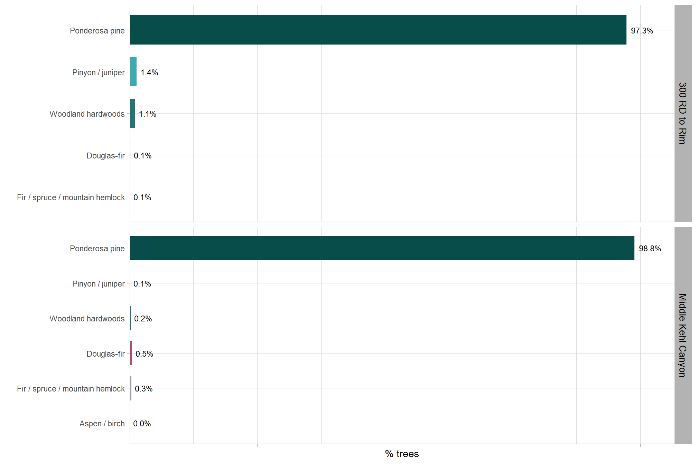
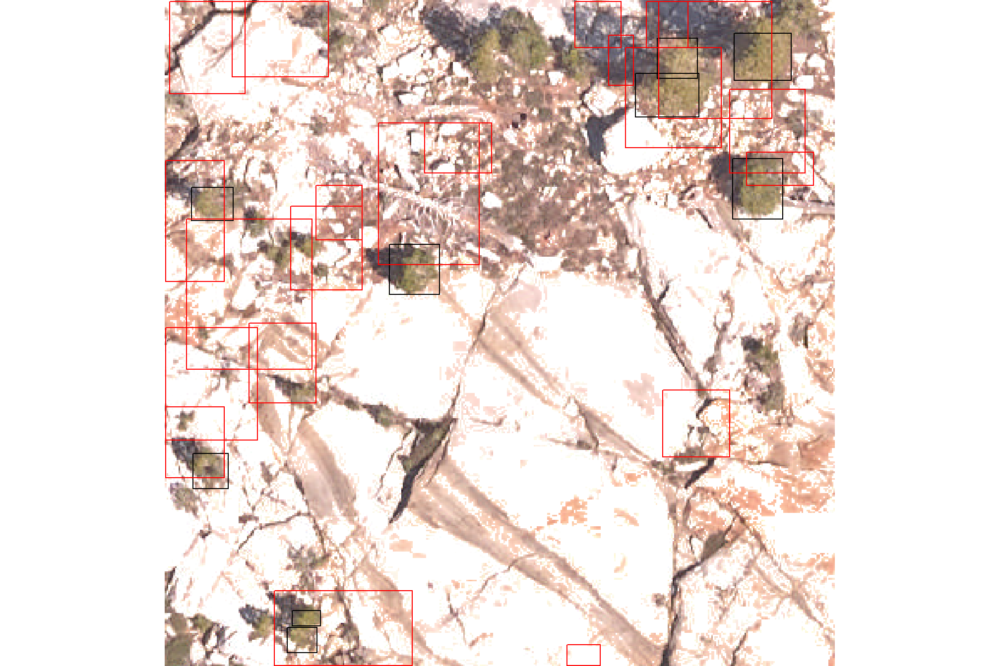
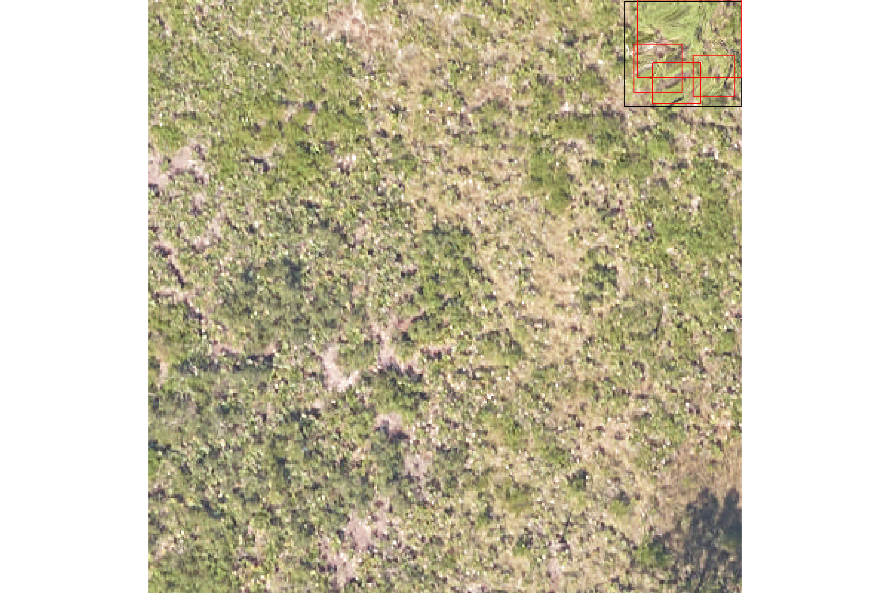
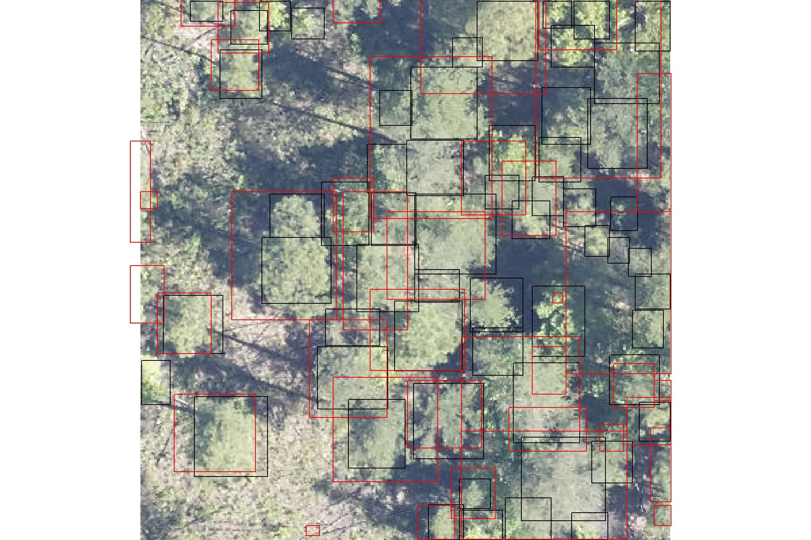
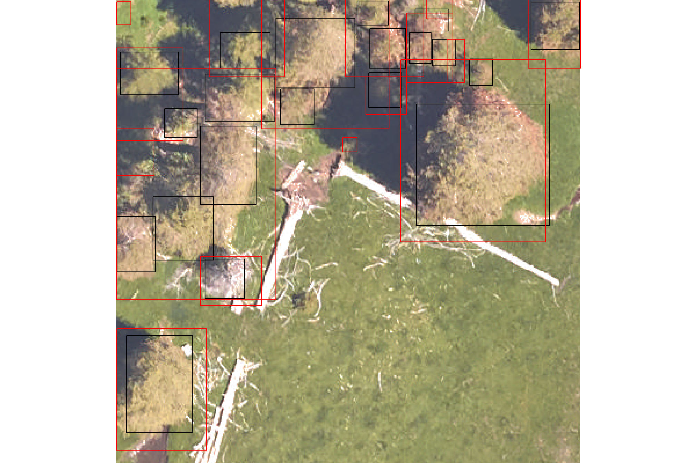

Section 3 Validate Tree Detection and Crown Delineation
In this section we’ll use the benchmark data made available in the NeonTreeEvaluation data set (Weinstein et al. 2021) to evaluate our process for lidar-based tree detection. We’ll implement our tree detection process via the [cloud2trees]https://github.com/georgewoolsey/cloud2trees) package
First, load the standard libraries
# bread-and-butter
library(tidyverse) # the tidyverse
library(viridis) # viridis colors
library(harrypotter) # hp colors
library(RColorBrewer) # brewer colors
library(scales) # work with number and plot scales
library(latex2exp)
# visualization
library(mapview) # interactive html maps
library(kableExtra) # tables
library(patchwork) # combine plots
library(ggnewscale) # ggnewscale
library(rgl) # rgl plotting
# spatial analysis
library(sf) # simple features
library(lidR) # lidar data
library(cloud2trees) # tha cloud2trees
library(NeonTreeEvaluation) # benchmark data3.1 NeonTreeEvaluation overview
Weinstein et al. (2021) developed:
a benchmark dataset of individual canopy crowns derived from multi-sensor imagery in the National Ecological Observatory Network (Table 1) that provides: 1) co-registered remote sensing data from multiple sensors (LiDAR, RGB imagery, and hyperspectral imagery) to allow comparisons of methods based on any single sensor (e.g., for LiDAR based methods), or any combination of sensors (e.g., combining RGB and hyperspectral), and 2) three types of evaluation data to allow assessing both ‘tree detection’, defined as the identifying the location of individual trees using evaluation data with a point at the crown center , and ‘crown delineation’ defined as identifying the boundary edge of crowns across a broad range of forest types. The benchmark is designed to allow flexibility in both workflow and sensor selection. (p. 2)
Table 1. Summary of datasets included in the benchmark dataset. All sensor data has been cropped to the extent of NEON field sampling plots.

Note the three data labeled as “Evaluation data” in the table. If you are asking “why three evaluation datasets?”, the authors provide some detail:
The inclusion of multiple evaluation types is critical because each type of evaluation data has strengths and limitations in evaluating model performance. Field collected stems are the most common evaluation data used in crown detection work due to high confidence that each stem represents a location of a single tree. However, the position of a tree stem can fail to accurately represent the position of the crown as viewed from above due to a combination of spatial errors in alignment with the image data and the tendency for trees to grow at acute angles (tree lean is not measured in the NEON data), such that the center of the crown and position of the stem can be offset by several meters….Image-annotated crowns are relatively easy to scale, allowing the collection of data for a wide range of forest types and for annotation of every visible crown in the image. Using image-annotated crowns supports the evaluation of methods across a broad range of forest types and allows both recall and precision to be calculated. However, since these annotations are not generated by an observer in the field there can be errors due to interpreting the images. This problem is solved using field-annotated crowns in which an observer annotates the remote-sensing imagery on a tablet while in the field [33]. The main limitation to this approach is that it is labor intensive, meaning that only a relatively small amount of validation data can be collected, making it difficult to obtain a large number of crowns across broad scales or assess model precision. Given the tradeoffs in each evaluation type, providing multiple criteria is a useful way of balancing the need for broad scale model verification with rigorous evaluation of field-based measurements. (p. 14-15)
To evaluate the performance of our aerial point cloud-based algorithm for 1) tree detection and 2) crown delineation using NeonTreeEvaluation we need to ensure our tree polygon data is formatted properly:
This package takes a standard submission format of predicted crowns in either bounding box or polygons as input and returns the evaluation scores of the detections for each of the three evaluation datasets. This reproducible workflow will facilitate creating a transparent process for future comparisons among crown detection algorithms. (p. 14)
The authors describe the “standard submission format” on the package GitHub:
Each row contains information for one predicted bounding box. The plot_name should be named the same as the files in the dataset without extension (e.g. SJER_021_2018 not SJER_021_2018.tif) and not the full path to the file on disk. Not all evaluation data are available for all plots. Functions like
evaluate_field_crownsandevaluate_image_crownswill look for matching plot name and ignore other plots. Depending on the speed of the algorithm, the simplest thing to do is predict all images in the RGB folder (see list_rgb()) and the package will handle matching images with the correct data to the correct evaluation procedure…Instead of bounding boxes, some methods may return polygons. To submit as polygons, create a single unprojected shapefile with polygons in image coordinates. Polygons must be complete with no holes. Here is an example of the above csv file in polygon format. Here the xmin, xmax, etc. columns are ignored since the information is stored in the geometry data.
Simple feature collection with 6 features and 7 fields
geometry type: POLYGON
dimension: XY
bbox: xmin: 30.39723 ymin: 122.1164 xmax: 397.5746 ymax: 400
CRS: NA
xmin ymin xmax ymax score label plot_name
1 41.01716 230.8854 151.08607 342.6985 0.8098674 Tree DSNY_014_2019
2 357.32129 122.1164 397.57458 159.3758 0.6968824 Tree DSNY_014_2019
3 30.39723 136.9157 73.79434 184.9473 0.5713338 Tree DSNY_014_2019
4 260.65921 285.6689 299.68811 326.7933 0.5511004 Tree DSNY_014_2019
5 179.34564 371.6130 232.49385 400.0000 0.4697072 Tree DSNY_014_2019
6 316.27377 378.9802 363.67542 400.0000 0.3259409 Tree DSNY_014_2019
st_sfc.lst.
1 POLYGON ((41.01716 230.8854...
2 POLYGON ((357.3213 122.1164...
3 POLYGON ((30.39723 136.9157...
4 POLYGON ((260.6592 285.6689...
5 POLYGON ((179.3456 371.613,...
6 POLYGON ((316.2738 378.9802...So we are going to: run cloud2trees::cloud2trees() on all lidar data, combine into a single tree list with a row unique by a detected tree and the plot_name column (e.g. “SJER_021_2018”), as an unprojected sf data with polygons in image coordinates. We may need to run cloud2trees::simplify_multipolygon_crowns() prior to submission.
3.2 lidar data in NeonTreeEvaluation
we first have to download evaluation data from the Zenodo archive (1GB), use the download() function to place the data in the correct package location. Download the much larger training data, set training=TRUE.
let’s find what data is available
# i did some digging around and the lidar data is here
lidar_dir_temp <- system.file(package = "NeonTreeEvaluation", "extdata", "NeonTreeEvaluation", "evaluation", "LiDAR")
# files
lidar_files_temp <- lidar_dir_temp %>% list.files(recursive = T, pattern = ".*\\.(laz|las)$", full.names = T) %>% unique()
# look at this
lidar_files_temp %>% basename() %>% sample(size = 9)## [1] "DEJU_057_2019.laz" "unnamed_plot_155.las" "HEAL_019_2019.laz"
## [4] "MLBS_061_2018.laz" "OSBS_025_2018.laz" "HEAL_009_2019.laz"
## [7] "YELL_021_2019.laz" "SOAP_030_2019.laz" "HARV_036_2019.laz"# let's pull out all sites with `.laz` data and create a data frame for tracking purposes
lidar_df <- lidar_files_temp %>%
dplyr::as_tibble() %>%
dplyr::rename(f_path = 1) %>%
# create some other variables
dplyr::mutate(
plot_name = f_path %>% basename() %>% stringr::str_remove_all("\\.(laz|las)$")
)
# what?
lidar_df %>% dplyr::glimpse()## Rows: 2,186
## Columns: 2
## $ f_path <chr> "C:/Program Files/R/R-4.3.0/library/NeonTreeEvaluation/extda…
## $ plot_name <chr> "2018_SJER_3_252000_4104000_image_628", "2018_SJER_3_252000_…that’s a lot of files…let’s only process the sites with evaluation data
# there are functions to get a list of all evaluation data
# let's use these to filter our lidar files
plotnames_temp <- c(
NeonTreeEvaluation::list_annotations()
, NeonTreeEvaluation::list_field_stems()
# this one includes file paths, so we have to clean
, NeonTreeEvaluation::list_field_crowns() %>%
stringr::str_match(pattern="(\\w+).tif") %>%
.[,2]
# there are plot_names from the submission data too
, NeonTreeEvaluation::submission_polygons$plot_name %>% unique()
, NeonTreeEvaluation::submission$plot_name %>% unique()
) %>%
unique()
# huh?
plotnames_temp %>% sample(11)## [1] "WREF_010_2019" "LENO_011"
## [3] "MLBS_062" "unnamed_plot_172_competition"
## [5] "PUUM_034" "OSBS_50_competition"
## [7] "STEI_004" "DELA_053_2019"
## [9] "LENO_014" "ABBY_008"
## [11] "unnamed_plot_96_competition"filter our lidar data list
lidar_df <- lidar_df %>%
#filter based on plots in evaluation data
dplyr::filter(plot_name %in% plotnames_temp) %>%
# pull out site
dplyr::mutate(
siteID = stringr::str_extract(plot_name, "[A-Z]+")
)
# what?
lidar_df %>% dplyr::glimpse()## Rows: 1,732
## Columns: 3
## $ f_path <chr> "C:/Program Files/R/R-4.3.0/library/NeonTreeEvaluation/extda…
## $ plot_name <chr> "2018_SJER_3_252000_4104000_image_628", "2018_SJER_3_252000_…
## $ siteID <chr> "SJER", "SJER", "SJER", "SJER", "SJER", "SJER", "SJER", "SJE…we will want to limit our evaluation to only sites with conifer trees since cloud2trees implements methods developed specifically to quantify conifer forest structure that may not be appropriate for other uses.
we’ll use the field data in the package to look for NEON sites with conifer trees. We’ll use the NEON plant list to identify conifer species: https://data.neonscience.org/taxonomic-lists?taxonTypeCode=PLANT (click “DOWNLOAD TAXONOMIC LIST”). We’ll filter for species belonging to Class Pinopsida.
conifer_spp <-
readr::read_csv(
"../data/OS_TAXON_PLANT-20220330T142149.csv"
, show_col_types = F
, progress = F
) %>%
dplyr::filter(
tolower(`class`) %in% c("pinopsida")
) %>%
dplyr::mutate(
taxonID = toupper(taxonID)
, vernacularName = tolower(vernacularName)
, genus = stringr::str_to_title(genus)
) %>%
dplyr::distinct(taxonID, vernacularName, genus)what are some of these conifers?
# huh?
conifer_spp %>%
dplyr::slice_sample(n = 10) %>%
kableExtra::kbl(caption = "Conifer species taxonID examples") %>%
kableExtra::kable_styling()| taxonID | vernacularName | genus |
|---|---|---|
| PLOR80 | oriental arborvitae | Platycladus |
| LAKA2 | japanese larch | Larix |
| PIARS2 | arizona pine | Pinus |
| PILA | sugar pine | Pinus |
| PIRA2 | monterey pine | Pinus |
| PIGL2 | spruce pine | Pinus |
| CALLI15SPP | nootka cypress | Callitropsis |
| PIELE2 | slash pine | Pinus |
| HEAB2 | santa cruz cypress | Hesperocyparis |
| PLATY6SPP | platycladus | Platycladus |
filter for NEON sites that have conifer trees based on field data from all terrestrial NEON sites with qualifying woody vegetation: https://data.neonscience.org/data-products/DP1.10098.001
conifer_sites <- NeonTreeEvaluation::field %>%
dplyr::left_join(
conifer_spp %>% dplyr::mutate(is_conifer = 1)
, by = "taxonID"
) %>%
dplyr::mutate(is_conifer = dplyr::coalesce(is_conifer, 0)) %>%
dplyr::group_by(siteID) %>%
dplyr::summarise(
tot = dplyr::n()
, conifer = sum(is_conifer)
, latitude = mean(plotLatitude)
, longitude = mean(plotLongitude)
) %>%
dplyr::ungroup() %>%
dplyr::mutate(pct_conifer = conifer/tot)what is the breakdown of woody vegetation sampled in NEON sites by the percent conifer?
conifer_sites %>%
dplyr::select(-c(longitude,latitude)) %>%
dplyr::arrange(desc(pct_conifer), desc(tot)) %>%
dplyr::slice_head(n = 19) %>%
kableExtra::kbl(caption = "Conifers in NEON sites", digits = 2) %>%
kableExtra::kable_styling()| siteID | tot | conifer | pct_conifer |
|---|---|---|---|
| NIWO | 1804 | 1804 | 1.00 |
| ONAQ | 88 | 88 | 1.00 |
| MOAB | 29 | 29 | 1.00 |
| HEAL | 21 | 21 | 1.00 |
| YELL | 13 | 13 | 1.00 |
| TEAK | 621 | 619 | 1.00 |
| DEJU | 173 | 169 | 0.98 |
| ABBY | 268 | 241 | 0.90 |
| RMNP | 1375 | 1083 | 0.79 |
| SOAP | 503 | 389 | 0.77 |
| DSNY | 34 | 26 | 0.76 |
| TALL | 2144 | 1521 | 0.71 |
| OSBS | 1288 | 858 | 0.67 |
| JERC | 562 | 336 | 0.60 |
| HARV | 3736 | 1701 | 0.46 |
| TREE | 1303 | 430 | 0.33 |
| BART | 3636 | 1022 | 0.28 |
| BONA | 188 | 48 | 0.26 |
| STEI | 754 | 151 | 0.20 |
let’s only keep NEON sites with >50% of the woody vegetation sampled as conifer
# minimum pct conifer
min_conifer_pct <- .5
# data frame of sites
conifer_sites <- conifer_sites %>%
dplyr::filter(pct_conifer>min_conifer_pct)finally, we’ll filter our lidar processing data for only these conifer sites
lidar_df <- lidar_df %>%
dplyr::inner_join(conifer_sites, by = "siteID") %>%
sf::st_as_sf(coords = c("longitude","latitude"), crs = 4326, remove = F) %>%
# filter out corrupt las files
dplyr::filter(
!plot_name %in% c(
"NIWO_005_2018"
, "SOAP_014_2018"
, "MOAB_003_2018"
, "NIWO_009_2018"
, "TEAK_028_2018"
, "YELL_058_2020"
, "RMNP_011_2018"
, "YELL_030_2018"
, "YELL_051_2019"
, "SOAP_014_2019"
, "TEAK_005_2018"
)
)what NEON sites have conifers and the most lidar plots
lidar_df %>%
sf::st_drop_geometry() %>%
dplyr::count(siteID) %>%
dplyr::arrange(desc(n)) %>%
dplyr::slice_head(n=11) %>%
kableExtra::kbl(caption = "NEON sites with conifers and lidar plots") %>%
kableExtra::kable_styling()| siteID | n |
|---|---|
| TEAK | 120 |
| DEJU | 87 |
| YELL | 83 |
| OSBS | 71 |
| SOAP | 71 |
| NIWO | 63 |
| ABBY | 55 |
| TALL | 54 |
| JERC | 50 |
| DSNY | 46 |
| HEAL | 29 |
what is the spatial distribution of these sites?
lidar_df %>%
dplyr::count(siteID) %>%
mapview::mapview(
zcol = "siteID", legend = F
, layer.name = "NEON site"
, col.regions = viridis::turbo(n=nrow(conifer_sites))
)that’s pretty good geographic coverage and in places that we expect to have conifers ;D
3.3 Example validation process
now that we have our lidar data that we can test our point cloud-based tree detection and crown segmentation process against, let’s walk through the validation for a single plot
we’ll test with a single point cloud in our filtered list from conifer sites with validation data
3.3.1 Preliminaries
3.3.1.1 View the point cloud
this step isn’t necessary for validation, but let’s see what this point cloud data looks like
We can plot the point cloud with and color by the point height
lidar_df$f_path[lidar_df_row] %>%
lidR::readLAS() %>%
lidR::plot(
color = "Z", breaks = "quantile", bg = "white", legend = T
, pal = harrypotter::hp(n=50, house = "gryffindor")
)there are trees in there for sure (and conifer trees by the looks of it)
let’s look at the co-registered RGB imagery (notice that the NeonTreeEvaluation commands rely on the deprecated raster package :)
# read rgb
rgb_temp <- lidar_df$plot_name[lidar_df_row] %>%
NeonTreeEvaluation::get_data(type = "rgb") %>%
raster::stack()
# read image annotated crown data and make polygons
polys_temp <-
lidar_df$plot_name[lidar_df_row] %>%
NeonTreeEvaluation::get_data(type = "annotations") %>%
NeonTreeEvaluation::xml_parse()
polys_temp <- NeonTreeEvaluation::boxes_to_spatial_polygons(polys_temp,rgb_temp)
# plot
terra::plotRGB(rgb_temp %>% terra::rast())
terra::plot(
polys_temp %>% terra::vect()
, col = NA, border = "red"
, lwd = 2 , add = TRUE
)3.3.1.2 ITD variable window
We discussed our method for individual tree detection (ITD) in this prior section. For our validation, we’ll be using the default window size in the cloud2trees::cloud2trees() and cloud2trees::raster2trees() settings.
Let’s see what that looks like
ws_temp <- cloud2trees::itd_ws_functions()[["log_fn"]]
ggplot() +
geom_function(fun=ws_temp, lwd=1.2, color = "navy") +
xlim(-5,60) +
labs(
x = "heights", y = "ws"
, subtitle = "`cloud2trees` default ITD variable window function"
) +
theme_light()
3.3.2 Filter for “canopy” trees
First, we’ll process the point cloud and get a tree list using our cloud2trees::cloud2trees() method with all defaults except we’ll raise the minimum height of trees to search to 3 m. The (Weinstein et al. 2021) benchmark was developed specifically for “canopy” trees and the field-collected stems evaluation data only includes >10 cm DBH trees:
NEON field crews sample all trees within a plot that are greater than 10cm DBH, regardless of whether the tree crown can be seen in the remote sensing image data. While understory tree detection is an important area of future work, the scope of this benchmark is focused on crowns in the canopy that are visible from above. (p. 10)
In order to set up our point cloud-based algorithm to find “canopy” trees, we’ll identify the shortest live tree in the field-collected stems data to set our min_height in cloud2trees::cloud2trees()
we’ll use the filters found in clean_field_data() from NeonTreeEvaluation as an internal function
percentile_for_ht <- 0.05
# get non-na heights from neon field measured trees
neon_field_heights <-
NeonTreeEvaluation::field %>%
# filters found in `clean_field_data()`
dplyr::filter(
!is.na(itcEasting)
, !stringr::str_detect(eventID,"2014")
, growthForm %in% c("single bole tree","multi-bole tree","small tree","sapling")
, stemDiameter>15
, (height>3|is.na(height))
) %>%
# getting only non-na
dplyr::filter(!is.na(height))
# get 5th tile ht by site
neon_site_heights <-
neon_field_heights %>%
dplyr::group_by(siteID) %>%
dplyr::summarise(
site_prcntl_ht = quantile(floor(height), probs = percentile_for_ht, na.rm = T)
) %>%
dplyr::ungroup()look at the summary of height data across all sites and plots
## Min. 1st Qu. Median Mean 3rd Qu. Max.
## 3.10 11.60 15.90 16.48 20.30 119.80what does this look like for each NEON site?
neon_field_heights %>%
dplyr::inner_join(neon_site_heights) %>%
ggplot(aes(x = height, group = siteID)) +
geom_density(color = "gold",fill = "gold", alpha = 0.7, lwd = 1.2) +
geom_vline(aes(xintercept = site_prcntl_ht), linetype = "dashed") +
facet_wrap(facets = vars(siteID), ncol = 7, scales = "free") +
scale_x_continuous(breaks = scales::breaks_extended(6)) +
labs(
x = "height (m)", y = ""
, subtitle = paste0(
"heights of \"canopy\" trees in NeonTreeEvaluation with "
, scales::number(percentile_for_ht*100, accuracy = 1)
, "th percentile by site"
)
) +
theme_light() +
theme(axis.text.y = element_blank(), axis.ticks.y = element_blank())
what is the overall 5th percentile to use for minimum height?
## 5%
## 6let’s attach this to our data frame of lidar data files
3.3.3 cloud2trees::cloud2trees()
ans <- cloud2trees::cloud2trees(
input_las_dir = lidar_df$f_path[lidar_df_row]
, output_dir = tempdir()
, min_height = lidar_df$site_prcntl_ht[lidar_df_row]
)## Read files headers: [==========] 100% (1 threads) Overall: [ ] 0% (1 threads) | : no progress Overall: [ ] 0% (1 threads) | read_las: [ ] 0% (1 threads) Overall: [ ] 0% (1 threads) | read_las: [ ] 1% (1 threads) Overall: [ ] 0% (1 threads) | read_las: [ ] 2% (1 threads) Overall: [ ] 0% (1 threads) | read_las: [ ] 3% (1 threads) Overall: [ ] 0% (1 threads) | read_las: [ ] 4% (1 threads) Overall: [ ] 0% (1 threads) | read_las: [ ] 5% (1 threads) Overall: [ ] 0% (1 threads) | read_las: [ ] 6% (1 threads) Overall: [ ] 0% (1 threads) | read_las: [ ] 7% (1 threads) Overall: [ ] 0% (1 threads) | read_las: [ ] 8% (1 threads) Overall: [ ] 0% (1 threads) | read_las: [ ] 9% (1 threads) Overall: [ ] 0% (1 threads) | read_las: [= ] 10% (1 threads) Overall: [ ] 0% (1 threads) | read_las: [= ] 11% (1 threads) Overall: [ ] 0% (1 threads) | read_las: [= ] 12% (1 threads) Overall: [ ] 0% (1 threads) | read_las: [= ] 13% (1 threads) Overall: [ ] 0% (1 threads) | read_las: [= ] 14% (1 threads) Overall: [ ] 0% (1 threads) | read_las: [= ] 15% (1 threads) Overall: [ ] 0% (1 threads) | read_las: [= ] 16% (1 threads) Overall: [ ] 0% (1 threads) | read_las: [= ] 17% (1 threads) Overall: [ ] 0% (1 threads) | read_las: [= ] 18% (1 threads) Overall: [ ] 0% (1 threads) | read_las: [= ] 19% (1 threads) Overall: [ ] 0% (1 threads) | read_las: [== ] 20% (1 threads) Overall: [ ] 0% (1 threads) | read_las: [== ] 21% (1 threads) Overall: [ ] 0% (1 threads) | read_las: [== ] 22% (1 threads) Overall: [ ] 0% (1 threads) | read_las: [== ] 23% (1 threads) Overall: [ ] 0% (1 threads) | read_las: [== ] 24% (1 threads) Overall: [ ] 0% (1 threads) | read_las: [== ] 25% (1 threads) Overall: [ ] 0% (1 threads) | read_las: [== ] 26% (1 threads) Overall: [ ] 0% (1 threads) | read_las: [== ] 27% (1 threads) Overall: [ ] 0% (1 threads) | read_las: [== ] 28% (1 threads) Overall: [ ] 0% (1 threads) | read_las: [== ] 29% (1 threads) Overall: [ ] 0% (1 threads) | read_las: [=== ] 30% (1 threads) Overall: [ ] 0% (1 threads) | read_las: [=== ] 31% (1 threads) Overall: [ ] 0% (1 threads) | read_las: [=== ] 32% (1 threads) Overall: [ ] 0% (1 threads) | read_las: [=== ] 33% (1 threads) Overall: [ ] 0% (1 threads) | read_las: [=== ] 34% (1 threads) Overall: [ ] 0% (1 threads) | read_las: [=== ] 35% (1 threads) Overall: [ ] 0% (1 threads) | read_las: [=== ] 36% (1 threads) Overall: [ ] 0% (1 threads) | read_las: [=== ] 37% (1 threads) Overall: [ ] 0% (1 threads) | read_las: [=== ] 38% (1 threads) Overall: [ ] 0% (1 threads) | read_las: [=== ] 39% (1 threads) Overall: [ ] 0% (1 threads) | read_las: [==== ] 40% (1 threads) Overall: [ ] 0% (1 threads) | read_las: [==== ] 41% (1 threads) Overall: [ ] 0% (1 threads) | read_las: [==== ] 42% (1 threads) Overall: [ ] 0% (1 threads) | read_las: [==== ] 43% (1 threads) Overall: [ ] 0% (1 threads) | read_las: [==== ] 44% (1 threads) Overall: [ ] 0% (1 threads) | read_las: [==== ] 45% (1 threads) Overall: [ ] 0% (1 threads) | read_las: [==== ] 46% (1 threads) Overall: [ ] 0% (1 threads) | read_las: [==== ] 47% (1 threads) Overall: [ ] 0% (1 threads) | read_las: [==== ] 48% (1 threads) Overall: [ ] 0% (1 threads) | read_las: [==== ] 49% (1 threads) Overall: [ ] 0% (1 threads) | read_las: [===== ] 50% (1 threads) Overall: [ ] 0% (1 threads) | read_las: [===== ] 51% (1 threads) Overall: [ ] 0% (1 threads) | read_las: [===== ] 52% (1 threads) Overall: [ ] 0% (1 threads) | read_las: [===== ] 53% (1 threads) Overall: [ ] 0% (1 threads) | read_las: [===== ] 54% (1 threads) Overall: [ ] 0% (1 threads) | read_las: [===== ] 55% (1 threads) Overall: [ ] 0% (1 threads) | read_las: [===== ] 56% (1 threads) Overall: [ ] 0% (1 threads) | read_las: [===== ] 57% (1 threads) Overall: [ ] 0% (1 threads) | read_las: [===== ] 58% (1 threads) Overall: [ ] 0% (1 threads) | read_las: [===== ] 59% (1 threads) Overall: [ ] 0% (1 threads) | read_las: [====== ] 60% (1 threads) Overall: [ ] 0% (1 threads) | read_las: [====== ] 61% (1 threads) Overall: [ ] 0% (1 threads) | read_las: [====== ] 62% (1 threads) Overall: [ ] 0% (1 threads) | read_las: [====== ] 63% (1 threads) Overall: [ ] 0% (1 threads) | read_las: [====== ] 64% (1 threads) Overall: [ ] 0% (1 threads) | read_las: [====== ] 65% (1 threads) Overall: [ ] 0% (1 threads) | read_las: [====== ] 66% (1 threads) Overall: [ ] 0% (1 threads) | read_las: [====== ] 67% (1 threads) Overall: [ ] 0% (1 threads) | read_las: [====== ] 68% (1 threads) Overall: [ ] 0% (1 threads) | read_las: [====== ] 69% (1 threads) Overall: [ ] 0% (1 threads) | read_las: [======= ] 70% (1 threads) Overall: [ ] 0% (1 threads) | read_las: [======= ] 71% (1 threads) Overall: [ ] 0% (1 threads) | read_las: [======= ] 72% (1 threads) Overall: [ ] 0% (1 threads) | read_las: [======= ] 73% (1 threads) Overall: [ ] 0% (1 threads) | read_las: [======= ] 74% (1 threads) Overall: [ ] 0% (1 threads) | read_las: [======= ] 75% (1 threads) Overall: [ ] 0% (1 threads) | read_las: [======= ] 76% (1 threads) Overall: [ ] 0% (1 threads) | read_las: [======= ] 77% (1 threads) Overall: [ ] 0% (1 threads) | read_las: [======= ] 78% (1 threads) Overall: [ ] 0% (1 threads) | read_las: [======= ] 79% (1 threads) Overall: [ ] 0% (1 threads) | read_las: [======== ] 80% (1 threads) Overall: [ ] 0% (1 threads) | read_las: [======== ] 81% (1 threads) Overall: [ ] 0% (1 threads) | read_las: [======== ] 82% (1 threads) Overall: [ ] 0% (1 threads) | read_las: [======== ] 83% (1 threads) Overall: [ ] 0% (1 threads) | read_las: [======== ] 84% (1 threads) Overall: [ ] 0% (1 threads) | read_las: [======== ] 85% (1 threads) Overall: [ ] 0% (1 threads) | read_las: [======== ] 86% (1 threads) Overall: [ ] 0% (1 threads) | read_las: [======== ] 87% (1 threads) Overall: [ ] 0% (1 threads) | read_las: [======== ] 88% (1 threads) Overall: [ ] 0% (1 threads) | read_las: [======== ] 89% (1 threads) Overall: [ ] 0% (1 threads) | read_las: [========= ] 90% (1 threads) Overall: [ ] 0% (1 threads) | read_las: [========= ] 91% (1 threads) Overall: [ ] 0% (1 threads) | read_las: [========= ] 92% (1 threads) Overall: [ ] 0% (1 threads) | read_las: [========= ] 93% (1 threads) Overall: [ ] 0% (1 threads) | read_las: [========= ] 94% (1 threads) Overall: [ ] 0% (1 threads) | read_las: [========= ] 95% (1 threads) Overall: [ ] 0% (1 threads) | read_las: [========= ] 96% (1 threads) Overall: [ ] 0% (1 threads) | read_las: [========= ] 97% (1 threads) Overall: [ ] 0% (1 threads) | read_las: [========= ] 98% (1 threads) Overall: [ ] 0% (1 threads) | read_las: [========= ] 99% (1 threads) Overall: [ ] 0% (1 threads) | read_las: [==========] 100% (1 threads) Overall: [ ] 0% (1 threads) | CSF: no progress Overall: [ ] 0% (1 threads) | Delaunay triangulation: no progress Overall: [ ] 0% (1 threads) | Delaunay triangulation: no progress Overall: [ ] 0% (1 threads) | Interpolation: [ ] 0% (10 threads) Overall: [ ] 0% (1 threads) | Interpolation: [ ] 1% (10 threads) Overall: [ ] 0% (1 threads) | Interpolation: [ ] 2% (10 threads) Overall: [ ] 0% (1 threads) | Interpolation: [ ] 3% (10 threads) Overall: [ ] 0% (1 threads) | Interpolation: [ ] 4% (10 threads) Overall: [ ] 0% (1 threads) | Interpolation: [ ] 5% (10 threads) Overall: [ ] 0% (1 threads) | Interpolation: [ ] 6% (10 threads) Overall: [ ] 0% (1 threads) | Interpolation: [ ] 7% (10 threads) Overall: [ ] 0% (1 threads) | Interpolation: [ ] 8% (10 threads) Overall: [ ] 0% (1 threads) | Interpolation: [ ] 9% (10 threads) Overall: [ ] 0% (1 threads) | Interpolation: [==========] 100% (10 threads) Overall: [ ] 0% (1 threads) | Interpolation: [ ] 0% (10 threads) Overall: [ ] 0% (1 threads) | Interpolation: [ ] 1% (10 threads) Overall: [ ] 0% (1 threads) | Interpolation: [ ] 2% (10 threads) Overall: [ ] 0% (1 threads) | Interpolation: [ ] 3% (10 threads) Overall: [ ] 0% (1 threads) | Interpolation: [ ] 4% (10 threads) Overall: [ ] 0% (1 threads) | Interpolation: [ ] 5% (10 threads) Overall: [ ] 0% (1 threads) | Interpolation: [ ] 6% (10 threads) Overall: [ ] 0% (1 threads) | Interpolation: [ ] 7% (10 threads) Overall: [ ] 0% (1 threads) | Interpolation: [ ] 8% (10 threads) Overall: [ ] 0% (1 threads) | Interpolation: [ ] 9% (10 threads) Overall: [ ] 0% (1 threads) | Interpolation: [==========] 100% (10 threads) Overall: [ ] 0% (1 threads) | Write LAS: [ ] 0% (1 threads) Overall: [ ] 0% (1 threads) | Write LAS: [ ] 1% (1 threads) Overall: [ ] 0% (1 threads) | Write LAS: [ ] 2% (1 threads) Overall: [ ] 0% (1 threads) | Write LAS: [ ] 3% (1 threads) Overall: [ ] 0% (1 threads) | Write LAS: [ ] 4% (1 threads) Overall: [ ] 0% (1 threads) | Write LAS: [ ] 5% (1 threads) Overall: [ ] 0% (1 threads) | Write LAS: [ ] 6% (1 threads) Overall: [ ] 0% (1 threads) | Write LAS: [ ] 7% (1 threads) Overall: [ ] 0% (1 threads) | Write LAS: [ ] 8% (1 threads) Overall: [ ] 0% (1 threads) | Write LAS: [ ] 9% (1 threads) Overall: [ ] 0% (1 threads) | Write LAS: [= ] 10% (1 threads) Overall: [ ] 0% (1 threads) | Write LAS: [= ] 11% (1 threads) Overall: [ ] 0% (1 threads) | Write LAS: [= ] 12% (1 threads) Overall: [ ] 0% (1 threads) | Write LAS: [= ] 13% (1 threads) Overall: [ ] 0% (1 threads) | Write LAS: [= ] 14% (1 threads) Overall: [ ] 0% (1 threads) | Write LAS: [= ] 15% (1 threads) Overall: [ ] 0% (1 threads) | Write LAS: [= ] 16% (1 threads) Overall: [ ] 0% (1 threads) | Write LAS: [= ] 17% (1 threads) Overall: [ ] 0% (1 threads) | Write LAS: [= ] 18% (1 threads) Overall: [ ] 0% (1 threads) | Write LAS: [= ] 19% (1 threads) Overall: [ ] 0% (1 threads) | Write LAS: [== ] 20% (1 threads) Overall: [ ] 0% (1 threads) | Write LAS: [== ] 21% (1 threads) Overall: [ ] 0% (1 threads) | Write LAS: [== ] 22% (1 threads) Overall: [ ] 0% (1 threads) | Write LAS: [== ] 23% (1 threads) Overall: [ ] 0% (1 threads) | Write LAS: [== ] 24% (1 threads) Overall: [ ] 0% (1 threads) | Write LAS: [== ] 25% (1 threads) Overall: [ ] 0% (1 threads) | Write LAS: [== ] 26% (1 threads) Overall: [ ] 0% (1 threads) | Write LAS: [== ] 27% (1 threads) Overall: [ ] 0% (1 threads) | Write LAS: [== ] 28% (1 threads) Overall: [ ] 0% (1 threads) | Write LAS: [== ] 29% (1 threads) Overall: [ ] 0% (1 threads) | Write LAS: [=== ] 30% (1 threads) Overall: [ ] 0% (1 threads) | Write LAS: [=== ] 31% (1 threads) Overall: [ ] 0% (1 threads) | Write LAS: [=== ] 32% (1 threads) Overall: [ ] 0% (1 threads) | Write LAS: [=== ] 33% (1 threads) Overall: [ ] 0% (1 threads) | Write LAS: [=== ] 34% (1 threads) Overall: [ ] 0% (1 threads) | Write LAS: [=== ] 35% (1 threads) Overall: [ ] 0% (1 threads) | Write LAS: [=== ] 36% (1 threads) Overall: [ ] 0% (1 threads) | Write LAS: [=== ] 37% (1 threads) Overall: [ ] 0% (1 threads) | Write LAS: [=== ] 38% (1 threads) Overall: [ ] 0% (1 threads) | Write LAS: [=== ] 39% (1 threads) Overall: [ ] 0% (1 threads) | Write LAS: [==== ] 40% (1 threads) Overall: [ ] 0% (1 threads) | Write LAS: [==== ] 41% (1 threads) Overall: [ ] 0% (1 threads) | Write LAS: [==== ] 42% (1 threads) Overall: [ ] 0% (1 threads) | Write LAS: [==== ] 43% (1 threads) Overall: [ ] 0% (1 threads) | Write LAS: [==== ] 44% (1 threads) Overall: [ ] 0% (1 threads) | Write LAS: [==== ] 45% (1 threads) Overall: [ ] 0% (1 threads) | Write LAS: [==== ] 46% (1 threads) Overall: [ ] 0% (1 threads) | Write LAS: [==== ] 47% (1 threads) Overall: [ ] 0% (1 threads) | Write LAS: [==== ] 48% (1 threads) Overall: [ ] 0% (1 threads) | Write LAS: [==== ] 49% (1 threads) Overall: [ ] 0% (1 threads) | Write LAS: [===== ] 50% (1 threads) Overall: [ ] 0% (1 threads) | Write LAS: [===== ] 51% (1 threads) Overall: [ ] 0% (1 threads) | Write LAS: [===== ] 52% (1 threads) Overall: [ ] 0% (1 threads) | Write LAS: [===== ] 53% (1 threads) Overall: [ ] 0% (1 threads) | Write LAS: [===== ] 54% (1 threads) Overall: [ ] 0% (1 threads) | Write LAS: [===== ] 55% (1 threads) Overall: [ ] 0% (1 threads) | Write LAS: [===== ] 56% (1 threads) Overall: [ ] 0% (1 threads) | Write LAS: [===== ] 57% (1 threads) Overall: [ ] 0% (1 threads) | Write LAS: [===== ] 58% (1 threads) Overall: [ ] 0% (1 threads) | Write LAS: [===== ] 59% (1 threads) Overall: [ ] 0% (1 threads) | Write LAS: [====== ] 60% (1 threads) Overall: [ ] 0% (1 threads) | Write LAS: [====== ] 61% (1 threads) Overall: [ ] 0% (1 threads) | Write LAS: [====== ] 62% (1 threads) Overall: [ ] 0% (1 threads) | Write LAS: [====== ] 63% (1 threads) Overall: [ ] 0% (1 threads) | Write LAS: [====== ] 64% (1 threads) Overall: [ ] 0% (1 threads) | Write LAS: [====== ] 65% (1 threads) Overall: [ ] 0% (1 threads) | Write LAS: [====== ] 66% (1 threads) Overall: [ ] 0% (1 threads) | Write LAS: [====== ] 67% (1 threads) Overall: [ ] 0% (1 threads) | Write LAS: [====== ] 68% (1 threads) Overall: [ ] 0% (1 threads) | Write LAS: [====== ] 69% (1 threads) Overall: [ ] 0% (1 threads) | Write LAS: [======= ] 70% (1 threads) Overall: [ ] 0% (1 threads) | Write LAS: [======= ] 71% (1 threads) Overall: [ ] 0% (1 threads) | Write LAS: [======= ] 72% (1 threads) Overall: [ ] 0% (1 threads) | Write LAS: [======= ] 73% (1 threads) Overall: [ ] 0% (1 threads) | Write LAS: [======= ] 74% (1 threads) Overall: [ ] 0% (1 threads) | Write LAS: [======= ] 75% (1 threads) Overall: [ ] 0% (1 threads) | Write LAS: [======= ] 76% (1 threads) Overall: [ ] 0% (1 threads) | Write LAS: [======= ] 77% (1 threads) Overall: [ ] 0% (1 threads) | Write LAS: [======= ] 78% (1 threads) Overall: [ ] 0% (1 threads) | Write LAS: [======= ] 79% (1 threads) Overall: [ ] 0% (1 threads) | Write LAS: [======== ] 80% (1 threads) Overall: [ ] 0% (1 threads) | Write LAS: [======== ] 81% (1 threads) Overall: [ ] 0% (1 threads) | Write LAS: [======== ] 82% (1 threads) Overall: [ ] 0% (1 threads) | Write LAS: [======== ] 83% (1 threads) Overall: [ ] 0% (1 threads) | Write LAS: [======== ] 84% (1 threads) Overall: [ ] 0% (1 threads) | Write LAS: [======== ] 85% (1 threads) Overall: [ ] 0% (1 threads) | Write LAS: [======== ] 86% (1 threads) Overall: [ ] 0% (1 threads) | Write LAS: [======== ] 87% (1 threads) Overall: [ ] 0% (1 threads) | Write LAS: [======== ] 88% (1 threads) Overall: [ ] 0% (1 threads) | Write LAS: [======== ] 89% (1 threads) Overall: [ ] 0% (1 threads) | Write LAS: [========= ] 90% (1 threads) Overall: [ ] 0% (1 threads) | Write LAS: [========= ] 91% (1 threads) Overall: [ ] 0% (1 threads) | Write LAS: [========= ] 92% (1 threads) Overall: [ ] 0% (1 threads) | Write LAS: [========= ] 93% (1 threads) Overall: [ ] 0% (1 threads) | Write LAS: [========= ] 94% (1 threads) Overall: [ ] 0% (1 threads) | Write LAS: [========= ] 95% (1 threads) Overall: [ ] 0% (1 threads) | Write LAS: [========= ] 96% (1 threads) Overall: [ ] 0% (1 threads) | Write LAS: [========= ] 97% (1 threads) Overall: [ ] 0% (1 threads) | Write LAS: [========= ] 98% (1 threads) Overall: [ ] 0% (1 threads) | Write LAS: [========= ] 99% (1 threads) Overall: [ ] 0% (1 threads) | Write LAS: [==========] 100% (1 threads) Overall: [==========] 100% (1 threads) | Overall: [==========] 100% (1 threads) quick check our our heights
## Min. 1st Qu. Median Mean 3rd Qu. Max.
## 6.498 13.042 30.052 28.916 46.069 52.4623.3.4 Format extracted tree polygons
we need to format our extracted trees for NeonTreeEvaluation evaluation and submission
first, we’ll simplify multipolygon crowns
check out our extracted trees
ggplot2::ggplot() +
ggplot2::geom_tile(
data = ans$chm_rast %>%
terra::as.data.frame(xy=T) %>%
dplyr::rename(f=3)
, mapping = ggplot2::aes(x = x, y = y, fill = f)
, na.rm = T
) +
harrypotter::scale_fill_hp(
option = "gryffindor"
, breaks = scales::breaks_extended(n=10)
) +
ggplot2::geom_sf(
data = ans$crowns_sf
, fill = NA, color = "gray33", lwd = 1
) +
ggplot2::scale_x_continuous(expand = c(0, 0)) +
ggplot2::scale_y_continuous(expand = c(0, 0)) +
ggplot2::labs(x = "", y = "", fill = "CHM (m)") +
ggplot2::theme_light() +
ggplot2::theme(axis.text = ggplot2::element_blank())
we’ll reserve judgement and let the data talk
format the data for NeonTreeEvaluation submission and evaluation
return_sf <-
ans$crowns_sf %>%
sf::st_set_geometry("geometry") %>%
dplyr::rowwise("treeID") %>%
dplyr::mutate(
xmin = sf::st_bbox(geometry)[1]
, ymin = sf::st_bbox(geometry)[2]
, xmax = sf::st_bbox(geometry)[3]
, ymax = sf::st_bbox(geometry)[4]
) %>%
dplyr::ungroup() %>%
dplyr::mutate(
label = "Tree"
, plot_name = lidar_df$plot_name[lidar_df_row]
) %>%
dplyr::select(xmin,xmax,ymin,ymax,label,plot_name) %>%
sf::st_set_crs(NA)
# what?
return_sf %>% dplyr::glimpse()## Rows: 23
## Columns: 7
## $ xmin <dbl> 314481.0, 314456.0, 314489.2, 314481.2, 314459.0, 314456.0, …
## $ xmax <dbl> 314483.2, 314463.2, 314496.0, 314491.5, 314463.2, 314458.0, …
## $ ymin <dbl> 4099617, 4099611, 4099607, 4099606, 4099608, 4099608, 409960…
## $ ymax <dbl> 4099620, 4099620, 4099620, 4099619, 4099612, 4099611, 409961…
## $ label <chr> "Tree", "Tree", "Tree", "Tree", "Tree", "Tree", "Tree", "Tre…
## $ plot_name <chr> "2018_TEAK_3_314000_4099000_image_334", "2018_TEAK_3_314000_…
## $ geometry <POLYGON> POLYGON ((314481 4099620, 3..., POLYGON ((314457 4099620…does this match the submission polygon data from the NeonTreeEvaluation package?
## Rows: 126,574
## Columns: 8
## $ xmin <dbl> 41.01716, 357.32129, 30.39723, 260.65921, 179.34564, 316.2…
## $ ymin <dbl> 230.8854218, 122.1164017, 136.9156647, 285.6688843, 371.61…
## $ xmax <dbl> 151.08607, 397.57458, 73.79434, 299.68811, 232.49385, 363.…
## $ ymax <dbl> 342.69846, 159.37578, 184.94730, 326.79330, 400.00000, 400…
## $ score <dbl> 0.8098674, 0.6968824, 0.5713338, 0.5511004, 0.4697072, 0.3…
## $ label <chr> "Tree", "Tree", "Tree", "Tree", "Tree", "Tree", "Tree", "T…
## $ plot_name <chr> "DSNY_014_2019", "DSNY_014_2019", "DSNY_014_2019", "DSNY_0…
## $ st_sfc.lst. <POLYGON> POLYGON ((41.01716 230.8854..., POLYGON ((357.3213 122…yes, except for the “score” column which I’m pretty sure is an artifact from after evaluation?
3.3.5 Test evaluation
We compared our tree detection and crown delineation results to the three types of evaluation data (i.e. “ground truth” data) presented by Weinstein et al. (2021): field-collected stems, image-annotated crowns, and field-annotated crowns. Field-collected stems offer precise tree locations but might not align with the position of the tree crown as viewed from above (e.g. due to tree lean), image-annotated crowns outline crown boundaries but are subjective, and field-annotated crowns combine the benefits of both but are highly resource-intensive.
3.3.5.1 Scores for an image-annotated crowns
The main data source are image-annotated crowns, in which a single observer annotated visible trees in 200 40m x 40m images from across the United States. Get the benchmark score image-annotated “ground truth” data.
in testing, including the sf polygon data did not work…switching to the bbox method with sf::st_drop_geometry()
rslt_img_annttd_crwns <- NeonTreeEvaluation::evaluate_image_crowns(
predictions = return_sf %>% sf::st_drop_geometry()
, show = T
, summarize = T
)## [1] "2018_TEAK_3_314000_4099000_image_334"
in the plot (if there is a plot), “red” boxes are crowns our point cloud-based method extracted and “black” are the image annotated crowns
it looks like the overlay is generally the same but we are still extracting trees that may not be considered “canopy” trees ;
what is in the return from NeonTreeEvaluation::evaluate_image_crowns() ?
## [1] "overall" "by_site" "plot_level" "count_error"overall: must be across all NEON sites, plots, and trees included for evaluation
## # A tibble: 1 × 2
## precision recall
## <dbl> <dbl>
## 1 0.261 0.24by_site: must be across plots, and trees included for evaluation in a NEON sites
## # A tibble: 1 × 3
## # Groups: Site [1]
## Site recall precision
## <chr> <dbl> <dbl>
## 1 TEAK 0.24 0.261plot_level: must be across trees included for evaluation in a NEON site, plot combination
## # A tibble: 1 × 3
## # Groups: plot_name [1]
## plot_name recall precision
## <chr> <dbl> <dbl>
## 1 2018_TEAK_3_314000_4099000_image_334 0.24 0.261count_error is the number of predicted trees minus the number of “ground truth” trees but in graphical form so we’ll skip it
3.3.5.2 Scores for an field-annotated crowns
The second data source is a small number of field-annotated crowns from two geographic sites. These crowns were drawn on a tablet while physically standing in the field, thereby reducing the uncertainty in crown segmentation.
not all plots have field-annotated crowns
NeonTreeEvaluation::evaluate_field_crowns() returns an error if “No plot names matching the field crown data, see list_field_crowns for paths to RGB field crown imagery.”… so, we’ll have to capture errors in our checks?
# safe it
safe_evaluate_field_crowns <- purrr::safely(NeonTreeEvaluation::evaluate_field_crowns)
# test it
rslt_fld_crwns <- safe_evaluate_field_crowns(
predictions = return_sf %>% sf::st_drop_geometry()
, show = T
, summarize = T
)did it do it?
## <simpleError in .f(...): No plot names matching the field crown data, see list_field_crowns for paths to RGB field crown imagery.>nope!
3.3.5.3 Scores for an field-collected stems
The third data source is the NEON Woody Vegetation Structure Dataset. Each tree stem is represented by a single point. This data has been filtered to represent overstory trees visible in the remote sensing imagery.
not all plots have field-collected stems
NeonTreeEvaluation::evaluate_field_stems() returns an error if “No submitted plot_names with matching field stem data, see list_field_stems()”… so, we’ll have to capture errors in our checks?
# safe it
safe_evaluate_field_stems <- purrr::safely(NeonTreeEvaluation::evaluate_field_stems)
# test it
rslt_fld_stems <- safe_evaluate_field_stems(
predictions = return_sf %>% sf::st_drop_geometry()
, show = T
, summarize = T
)did it do it?
## <simpleError in .f(...): No submitted plot_names with matching field stem data, see list_field_stems()>nope!
3.4 Full validation process
Above, we tested the validation process for a single sample plot. Here we’ll create a function to detect trees and delineate tree crowns using our cloud2trees::cloud2trees() method to apply over all sample plots. Then we’ll compare our tree detection and crown delineation results to the three types of evaluation data (i.e. “ground truth” data) presented by Weinstein et al. (2021): field-collected stems, image-annotated crowns, and field-annotated crowns. Field-collected stems offer precise tree locations but might not align with the position of the tree crown as viewed from above (e.g. due to tree lean), image-annotated crowns outline crown boundaries but are subjective, and field-annotated crowns combine the benefits of both but are highly resource-intensive.
3.4.1 Function to extract trees
let’s create a function to extract trees and format for evaluation using our lidar_df data which includes a data frame of file paths with the appropriate plot name
cloud2trees_for_eval <- function(lidar_df_row, lidar_df, ws, min_height = NA) {
# message
message(paste0("doing the work for ...... ", lidar_df$plot_name[lidar_df_row]))
# run c2t
qc2t <- purrr::safely(cloud2trees::cloud2trees)
ans <- qc2t(
input_las_dir = lidar_df$f_path[lidar_df_row]
, output_dir = tempdir()
, min_height = dplyr::coalesce(min_height, lidar_df$site_prcntl_ht[lidar_df_row], 2)
, ws = ws
)
if(!is.null(ans$error)){return(NULL)}
ans <- ans$result
# simp
ans$crowns_sf <- cloud2trees::simplify_multipolygon_crowns(ans$crowns_sf)
# return
return_sf <-
ans$crowns_sf %>%
sf::st_set_geometry("geometry") %>%
dplyr::rowwise("treeID") %>%
dplyr::mutate(
xmin = sf::st_bbox(geometry)[1]
, ymin = sf::st_bbox(geometry)[2]
, xmax = sf::st_bbox(geometry)[3]
, ymax = sf::st_bbox(geometry)[4]
) %>%
dplyr::ungroup() %>%
dplyr::mutate(
label = "Tree"
, plot_name = lidar_df$plot_name[lidar_df_row]
) %>%
dplyr::select(xmin,xmax,ymin,ymax,label,plot_name) %>%
sf::st_set_crs(NA)
# give the workers a rest
Sys.sleep(3)
return(return_sf)
}3.4.2 Build evaluation data
let’s run each point cloud through our lidar-based tree detection implemented via cloud2trees::cloud2trees()
# where should we save the file?
submission_fn <- "../data/NeonTreeEvaluation_submission.gpkg"
# if we don't already have the data, run it
if(!file.exists(submission_fn)){
# if(T){
my_submission <-
# 1:nrow(lidar_df) %>% # uncomment this when it gets real
sample(1:nrow(lidar_df), size = 222) %>%
purrr::map(\(x)
cloud2trees_for_eval(
lidar_df_row = x
, lidar_df = lidar_df
, ws = cloud2trees::itd_ws_functions()[["log_fn"]]
)
) %>%
dplyr::bind_rows()
# save it
sf::st_write(my_submission, submission_fn, append = F)
}else{
my_submission <- sf::st_read(submission_fn)
}what did we get?
## Rows: 9,547
## Columns: 7
## $ xmin <dbl> 553118.8, 553114.0, 553114.5, 553119.0, 553102.2, 553102.5, …
## $ xmax <dbl> 553120.0, 553115.5, 553115.8, 553119.8, 553103.0, 553103.2, …
## $ ymin <dbl> 5065836, 5065821, 5065821, 5065819, 5065812, 5065812, 410758…
## $ ymax <dbl> 5065837, 5065823, 5065823, 5065819, 5065813, 5065812, 410758…
## $ label <chr> "Tree", "Tree", "Tree", "Tree", "Tree", "Tree", "Tree", "Tre…
## $ plot_name <chr> "ABBY_021_2019", "ABBY_021_2019", "ABBY_021_2019", "ABBY_021…
## $ geom <POLYGON> POLYGON ((553119.2 5065837,..., POLYGON ((553114.8 50658…trees detected by plot
my_submission %>%
sf::st_drop_geometry() %>%
dplyr::count(plot_name) %>%
dplyr::slice_sample(n=14) %>%
dplyr::arrange(plot_name) %>%
kableExtra::kbl(caption = "cloud2trees ITD results by plot", digits = 0) %>%
kableExtra::kable_styling()| plot_name | n |
|---|---|
| ABBY_022_2019 | 1 |
| DEJU_006_2018 | 28 |
| DEJU_011_2019 | 2 |
| DEJU_023_2019 | 38 |
| DSNY_027_2018 | 10 |
| JERC_013_2019 | 21 |
| NIWO_017_2018 | 109 |
| OSBS_023_2019 | 19 |
| OSBS_028_2018 | 50 |
| TEAK_020_2018 | 32 |
| TEAK_054_2018 | 38 |
| YELL_020_2019 | 114 |
| YELL_023_2019 | 32 |
| YELL_052_2018 | 39 |
3.4.3 Full evaluation
We compared our tree detection and crown delineation results to the three types of evaluation data (i.e. “ground truth” data) presented by Weinstein et al. (2021): field-collected stems, image-annotated crowns, and field-annotated crowns. Field-collected stems offer precise tree locations but might not align with the position of the tree crown as viewed from above (e.g. due to tree lean), image-annotated crowns outline crown boundaries but are subjective, and field-annotated crowns combine the benefits of both but are highly resource-intensive.
3.4.3.1 Scores for an image-annotated crowns
The main data source are image-annotated crowns, in which a single observer annotated visible trees in 200 40m x 40m images from across the United States. Get the benchmark score image-annotated “ground truth” data.
in testing, including the sf polygon data did not work…switching to the bbox method with sf::st_drop_geometry()
rslt_img_annttd_crwns <- NeonTreeEvaluation::evaluate_image_crowns(
predictions = my_submission %>% sf::st_drop_geometry()
, show = F
, summarize = T
)overall: must be across all NEON sites, plots, and trees included for evaluation
rslt_img_annttd_crwns$overall %>%
kableExtra::kbl(
caption = "Overall: cloud2trees ITD performance versus image-annotated crowns"
, digits = 3
) %>%
kableExtra::kable_styling()| precision | recall |
|---|---|
| 0.301 | 0.42 |
by_site: must be across plots, and trees included for evaluation in a NEON sites
rslt_img_annttd_crwns$by_site %>%
kableExtra::kbl(
caption = "NEON site-level: cloud2trees ITD performance versus image-annotated crowns"
, digits = 3
) %>%
kableExtra::kable_styling()| Site | recall | precision |
|---|---|---|
| ABBY | 0.702 | 0.541 |
| DSNY | 1.000 | 0.250 |
| JERC | 0.857 | 0.316 |
| NIWO | 0.274 | 0.353 |
| OSBS | 0.469 | 0.303 |
| SOAP | 0.220 | 0.224 |
| TALL | 0.241 | 0.359 |
| TEAK | 0.365 | 0.316 |
plot_level: must be across trees included for evaluation in a NEON site, plot combination
rslt_img_annttd_crwns$plot_level %>%
dplyr::ungroup() %>%
dplyr::slice_sample(n=14) %>%
dplyr::arrange(plot_name) %>%
kableExtra::kbl(
caption = "NEON plot-level: cloud2trees ITD performance versus image-annotated crowns"
, digits = 3
) %>%
kableExtra::kable_styling()| plot_name | recall | precision |
|---|---|---|
| 2018_TEAK_3_314000_4099000_image_334 | 0.240 | 0.261 |
| 2018_TEAK_3_315000_4101000_image_600 | 0.600 | 0.474 |
| 2018_TEAK_3_315000_4107000_image_237 | 0.591 | 0.500 |
| 2018_TEAK_3_318000_4107000_image_718 | 0.000 | 0.000 |
| 2018_TEAK_3_323000_4098000_image_691 | 0.333 | 0.025 |
| 2018_TEAK_3_323000_4101000_image_415 | 0.318 | 0.269 |
| DSNY_005_2018 | 1.000 | 0.250 |
| NIWO_017_2018 | 0.298 | 0.413 |
| NIWO_042_2018 | 0.600 | 0.429 |
| OSBS_008_2019 | 0.333 | 0.317 |
| OSBS_022_2019 | 0.000 | 0.000 |
| OSBS_029_2019 | 0.619 | 0.411 |
| TEAK_049_2018 | 0.440 | 0.407 |
| TEAK_061_2018 | 0.171 | 0.219 |
how many plots did we evaluate that met all criteria?:
had point cloud data in the benchmark was from a NEON site with primarily conifer trees *had image-annotated crowns for evaluation
# how many plots did we evaluate that met all criteria?
rslt_img_annttd_crwns$plot_level %>%
dplyr::ungroup() %>%
dplyr::distinct(plot_name) %>%
nrow()## [1] 31how many plots were evaluated using cloud2trees::cloud2trees() by NEON site?
img_annttd_crwn_plots_temp <- lidar_df %>%
dplyr::inner_join(
rslt_img_annttd_crwns$plot_level %>%
dplyr::ungroup() %>%
dplyr::distinct(plot_name)
, by = "plot_name"
)
# plots evaluated by neon site
img_annttd_crwn_plots_temp %>%
sf::st_drop_geometry() %>%
dplyr::count(siteID) %>%
dplyr::arrange(desc(n)) %>%
kableExtra::kbl(
caption = "Number of 40m x 40m plots with image-annotated crowns evaluated using cloud2trees by NEON site"
, digits = 3
) %>%
kableExtra::kable_styling()| siteID | n |
|---|---|
| TEAK | 17 |
| OSBS | 6 |
| NIWO | 3 |
| ABBY | 1 |
| DSNY | 1 |
| JERC | 1 |
| SOAP | 1 |
| TALL | 1 |
where are these NEON sites evaluated using cloud2trees::cloud2trees()?
img_annttd_crwn_plots_temp %>%
dplyr::count(siteID) %>%
mapview::mapview(
cex = "n", legend = F
, layer.name = "NEON site"
)let’s review some figures comparing the image-annotated crowns versus the bounding box of our delineated crown polygons
in the RGB plots: “red” boxes are crowns from our point cloud-based method extracted and “black” are the image annotated crowns
rslt_img_annttd_crwns$plot_level %>%
dplyr::ungroup() %>%
dplyr::slice_sample(n=4) %>%
dplyr::pull(plot_name) %>%
purrr::map(\(x) NeonTreeEvaluation::image_crowns(
predictions = my_submission %>%
sf::st_drop_geometry() %>%
dplyr::filter(plot_name==x)
, show = T
, project_boxes = F
))
in the RGB plots: “red” boxes are crowns from our point cloud-based method extracted and “black” are the image annotated crowns
3.4.3.2 Scores for an field-annotated crowns
The second data source is a small number of field-annotated crowns from two geographic sites. These crowns were drawn on a tablet while physically standing in the field, thereby reducing the uncertainty in crown segmentation.
none of the field-annotated crown sites have aerial lidar data
# i did some digging around and the lidar data is here
lidar_dir_temp <- system.file(package = "NeonTreeEvaluation", "extdata", "NeonTreeEvaluation", "evaluation", "LiDAR")
# files
lidar_files_temp <- lidar_dir_temp %>%
list.files(recursive = T, pattern = ".*\\.(laz|las)$", full.names = T) %>%
basename() %>%
stringr::str_remove_all("\\.(laz|las)$") %>%
unique()
# what sites have field annotated crowns?
fc_temp <- NeonTreeEvaluation::list_field_crowns() %>%
stringr::str_match(pattern="(\\w+).tif") %>%
.[,2]
# are any lidar files available for these sites?
lidar_files_temp[lidar_files_temp %in% fc_temp] %>%
length()## [1] 0nope!
3.4.3.3 Scores for an field-collected stems
The third data source is the NEON Woody Vegetation Structure Dataset. Each tree stem is represented by a single point. This data has been filtered to represent overstory trees visible in the remote sensing imagery.
not all plots have field-collected stems
in testing, including the sf polygon data did not work…switching to the bbox method with sf::st_drop_geometry()
rslt_fld_stems <- evaluate_field_stems(
predictions = my_submission %>% sf::st_drop_geometry()
, show = F
, summarize = T
)overall: must be across all NEON sites, plots, and trees included for evaluation
rslt_fld_stems$overall %>%
kableExtra::kbl(
caption = "Overall: cloud2trees ITD performance versus field-collected stems"
, digits = 3
) %>%
kableExtra::kable_styling()| recall |
|---|
| 0.776 |
by_site: must be across plots, and trees included for evaluation in a NEON sites
rslt_fld_stems$by_site %>%
kableExtra::kbl(
caption = "NEON site-level: cloud2trees ITD performance versus field-collected stems"
, digits = 3
) %>%
kableExtra::kable_styling()| Site | recall |
|---|---|
| ABBY | 0.333 |
| DEJU | 0.885 |
| JERC | 0.743 |
| MOAB | 0.909 |
| NIWO | 0.501 |
| OSBS | 0.914 |
| TALL | 0.667 |
plot_level: must be across trees included for evaluation in a NEON site, plot combination
rslt_fld_stems$plot_level %>%
dplyr::ungroup() %>%
dplyr::slice_sample(n=14) %>%
dplyr::arrange(plot_name) %>%
kableExtra::kbl(
caption = "NEON plot-level: cloud2trees ITD performance versus field-collected stems"
, digits = 3
) %>%
kableExtra::kable_styling()| siteID | plot_name | recall | n |
|---|---|---|---|
| ABBY | ABBY_073 | 0.333 | 3 |
| DEJU | DEJU_014 | 0.714 | 7 |
| JERC | JERC_052 | 1.000 | 3 |
| JERC | JERC_053 | 0.625 | 16 |
| NIWO | NIWO_005 | 0.571 | 14 |
| NIWO | NIWO_009 | 0.304 | 23 |
| NIWO | NIWO_011 | 0.455 | 44 |
| NIWO | NIWO_017 | 0.463 | 41 |
| NIWO | NIWO_040 | 0.450 | 40 |
| OSBS | OSBS_007 | 0.643 | 14 |
| OSBS | OSBS_008 | 0.857 | 7 |
| OSBS | OSBS_029 | 0.750 | 20 |
| OSBS | OSBS_038 | 0.722 | 18 |
| TALL | TALL_055 | 0.667 | 21 |
how many plots did we evaluate that met all criteria?:
had point cloud data in the benchmark was from a NEON site with primarily conifer trees *had field-collected stems for evaluation
# how many plots did we evaluate that met all criteria?
rslt_fld_stems$plot_level %>%
dplyr::ungroup() %>%
dplyr::distinct(plot_name) %>%
nrow()## [1] 43how many plots were evaluated using cloud2trees::cloud2trees() by NEON site?
fld_stems_plots_temp <-
lidar_df %>%
dplyr::mutate(
sht_plt = plot_name %>%
stringr::str_extract(
rslt_fld_stems$plot_level %>%
dplyr::ungroup() %>%
dplyr::distinct(plot_name) %>%
dplyr::pull(plot_name) %>%
paste(collapse = "|")
)
) %>%
dplyr::filter(!is.na(sht_plt)) %>%
dplyr::group_by(siteID,sht_plt) %>%
dplyr::summarise(n=dplyr::n()) %>%
dplyr::ungroup() %>%
dplyr::rename(plot_name=sht_plt)
# plots evaluated by neon site
fld_stems_plots_temp %>%
sf::st_drop_geometry() %>%
dplyr::count(siteID) %>%
dplyr::arrange(desc(n)) %>%
kableExtra::kbl(
caption = "Number of 40m x 40m plots with field-collected stems evaluated using cloud2trees by NEON site"
, digits = 3
) %>%
kableExtra::kable_styling()| siteID | n |
|---|---|
| OSBS | 16 |
| DEJU | 9 |
| NIWO | 9 |
| JERC | 5 |
| TALL | 2 |
| ABBY | 1 |
| MOAB | 1 |
where are these NEON sites evaluated using cloud2trees::cloud2trees()?